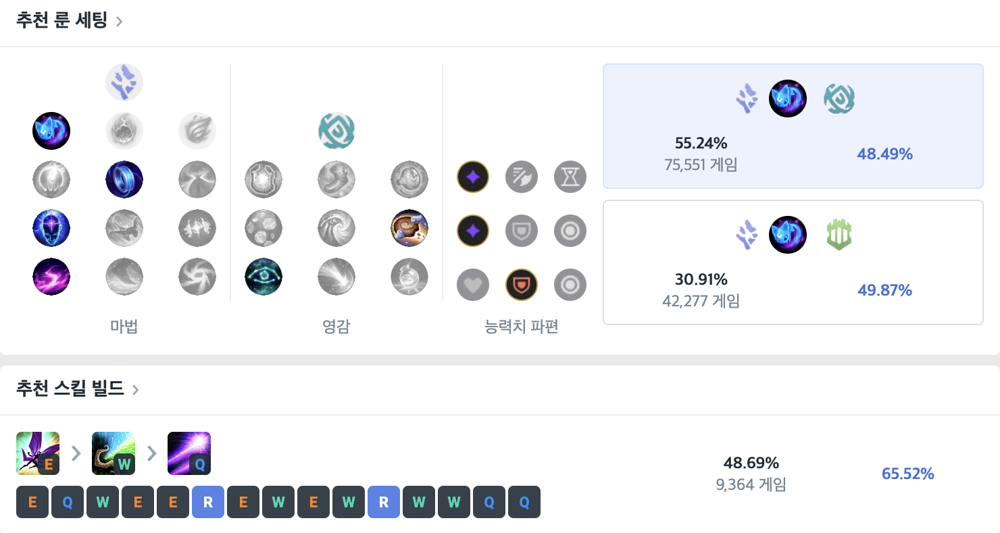
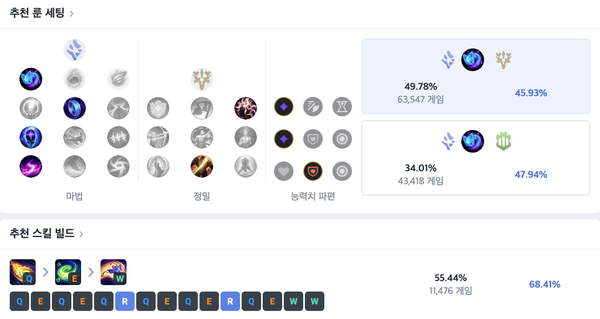
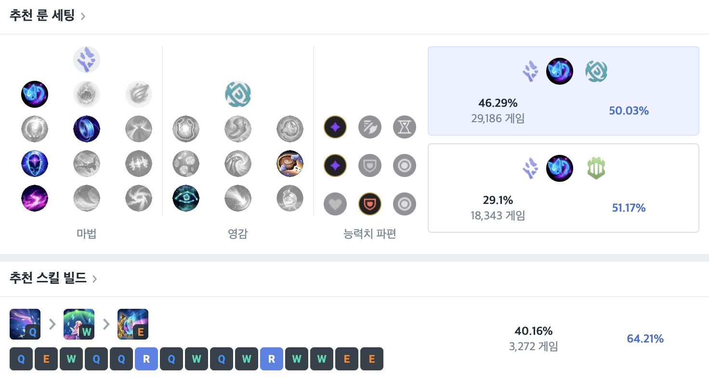
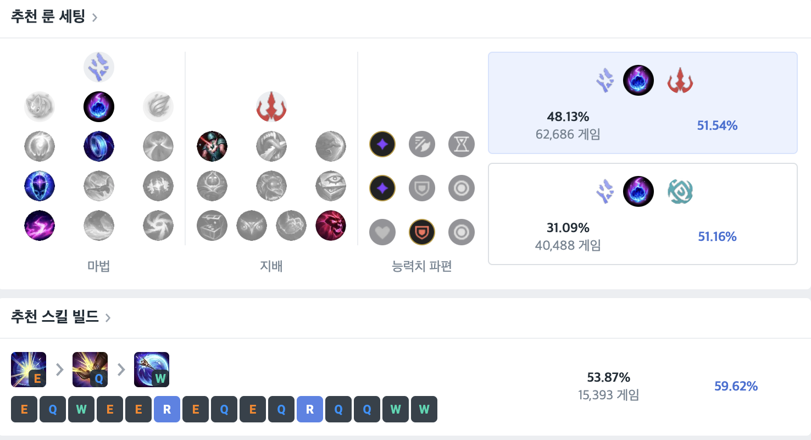
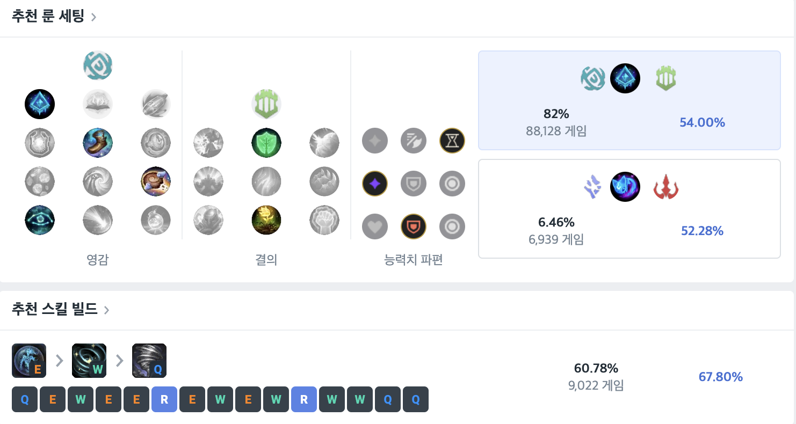

*comment: 룰루가 쉬워보이지만 생각보다 딜이 약하지 않기에 라인전에서 딜교에 우위를 가져올 수 있어서 딜교를 계속해줘야한다

- 기본적으로는 콩콩이룬을 사용한다.
- 암살자가 많은 경우에는 수호자를 드는 것을 추천한다.
- 보조룬은 일반적으로 영감을 들어준다.
- 보조룬은 한 방이 강한 상대(파이크,노틸,블츠)일 경우에 뼈방패를 반드시 들어야한다.
- E,Q를 이용한 딜교나, 본인에게 E를 쓰고 평타, 스킬 딜교를 해야한다.
Yuumi
*comment: 솔직히 유미는 못해도 크게 티나지 않는다

- 기본적으로 콩콩이룬을 사용한다.
- 라인전에 딜교를 중요시하면 유성을 들어도 된다.
- 보조룬은 일반적으로 정밀(침착), 결의(소생)을 들어준다.
- 보통 물리면 죽기 때문에 뼈방패는 들지 않는다.
- 원딜에 기생이 아니라 싸울때는 앞에서 스킬을 맞아줘야한다.
Seraphin
*comment:중국이미지 때문에 인식이 안좋지 챔프는 나쁘지 않다.

- 기본적으로는 콩콩이룬을 사용한다.
- 암살자가 많은 경우에는 수호자를 드는 것을 추천한다.
- 보조룬은 일반적으로 영감을 들어준다.
- 보조룬은 한 방이 강한 상대(파이크,노틸,블츠)일 경우에 뼈방패를 반드시 들어야한다.
- 라일라이를 가는 이유는 딜템을 올리는 것이 아니라 CC기 때문에 가는 것이다(슬로우에 E를 쓰면 속박, 속박에는 기절인데, 라일라이템에 슬로우가 붙기때문에 E로 즉발속박을 넣을수있다.)
- 사거리가 상당히 길지만 생각보다 맞추는 건 어렵기 때문에 스킬로 라인을 밀어넣고 견제를 하는걸 추천한다.
Lux
*comment: 루덴만 뜨면 원딜보다 쎄다

- 기본적으로는 유성룬을 사용한다.
- 콩콩이를 들수는 있지만 비추다.
- 보조룬은 일반적으로 지배,영감을 들어준다.
- 보조룬은 한 방이 강한 상대(파이크,노틸,블츠)일 경우에 뼈방패를 들어도한다.
- Q는 절대 먼저쓰면 안된다(생존기임).
- E를 즉발로 터트리는게 아니라 최대한 천천히써서 슬로우를 많이 묻혀야하고, 진로방해를 하는곳에도 유용하게 쓰인다.
- 루덴이 뜨는 순간 도구가 아니라 미드라이너급 딜이 나온다.
Janna
*comment: 똥챔인줄 아는데 똥챔아니다

- 기본적으로는 빙결룬을 사용한다.
- 보조룬은 일반적으로 결의나 지배를 들어준다.
- 보조룬은 한 방이 강한 상대(파이크,노틸,블츠)일 경우에 뼈방패를 들어야한다.
- 스킬은 단순하지만 Q를 맞추는 것이 어렵기 때문에 많이 해봐야된다(Q없으면 빙결도 없다 생각해야한다).
- 잔나의 W ,패시브로 이속이 빠르기 때문에 이동할때 잘 사용해줘야 한다.